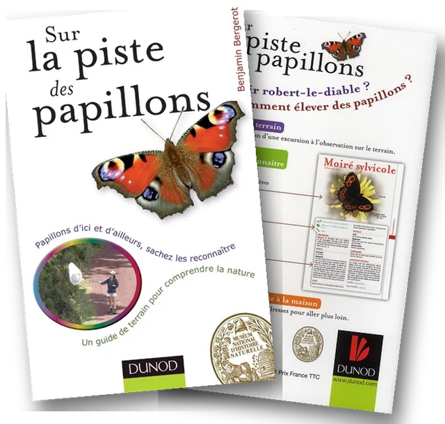

Bergerot B., 2011. Sur la piste des papillons (On the track of butterflies). Éditions Dunod. 192 p.
Poulet N., Séon-Massin N. & Basilico L., 2013. Régime de débit et peuplements piscicoles. pp. 63–65. In Poulet N., Séon-Massin N. & Basilico L. (Eds), Biodiversité aquatique : du diagnostic à la restauration. Les rencontres de l'ONEMA. 90 p.
Gourmand A.L., 2012. Fonctionnement des communautés de rhopalocères. pp. 125–159 (based on Bergerot B. 2010, PhD thesis). In Renault O. (Ed.), La faune de Seine-et-Marne. Mieux connaître pour mieux préserver. Éditions Librairie des Musées. 359 p.
Bergerot B., 2020. Contributions des citizen sciences pour la recherche en écologie. Habilitation à diriger des recherches (HDR), Université de Rennes, UMR CNRS 6553 ECOBIO.
Bergerot B., 2010. Rhopalocera community functioning in urban and periurban areas. PhD thesis, Université Pierre et Marie Curie (Paris VI). 229 p.
Bergerot B., 2009. Toward biodiversity prioritization. Biologos.
International conferences 29
Piscart C., Bergerot B., Charpentier I., Mathis D. & Servain S. 2026. TREIZH Project: Toward an integrative approach to socio-ecological and biodiversity trajectories in the wetlands of metropolitan France. 5th International Days of Limnology and Oceanography, JILO, Metz, France, October 12 – 15, 2026.
Bergerot B. & Piscart C. 2025. Reconciling waterscape and landscape: the role of emerging aquatic insects. 14th Symposium for European Freshwater Sciences SEFS 14, Bolu, Turkey, July 21-25, 2025.
Belouard N., Derocles S., Roussel JM., Pétillon J., Bergerot B. & Piscart C. 2025. Metabarcoding of diet DNA in wolf spiders evaluates the support of emerging aquatic insects to terrestrial food webs. 14th Symposium for European Freshwater Sciences SEFS 14, Bolu, Turkey, July 21-25, 2025.
Marrec R., Bergerot B., Caro G., Houet T., Laslier M., Schulz P., Volovitch P., Wurtz F., Zarzoso-Lacoste D., Zerbib Z. & Langlais A. 2025. Between electricity grids and ecological networks: How suitable are agricultural areas for the development of agrivoltaics? AgriVoltaics World Conference 2025, Freiburg, Germany, July 1-3, 2025.
Piscart C., Bélouard N., Bonnefond M., De la Brosse A., Houet T., Legay N., Mandard M., Murail-Zimmermann C. & Bergerot B. 2025. Ecosystem Services provided by streams to adjacent agricultural terrestrial ecosystems. eLTER Science Conference, Tampere, Finland, June 23-27, 2025.
Fovet O., Bergerot B., Raitif J., de la Brosse A., Houet T., Pellan L., Piscart C. & Roussel JM. 2025. Contribution of emerging aquatic insects to lateral transfers of Carbon and Nutrients: significance for the integrated landscape budget along a gradient of agricultural pressure. eLTER Science Conference, Tampere, Finland, June 23-27, 2025.
Hoeffner K., Bergerot B., Butt K. Gérard S., Pelosi C., Pérès G., Briones M., Decaëns T., Delaveau N., Guillocheau S., Hedde M., Hotte H., Le Bayon RC., Muys B., Phillips H., Poupelin M., Cluzeau D. 2024. Reliability of earthworm data from citizen science: Lessons from 8 years of a French National monitoring protocol. XIX International Colloquium on Soil Zoology ICSZ, Cape Town, South Africa, August 26 – 29, 2024.
Lestienne M., Mazier F., Bergerot B., Hély C. & Marguerie D. 2024. Multi-millennial modeling of North-western France vegetation. 6th Annual Meeting AASP - The Palynological Society, Montpellier, France, June 24 – 28, 2024.
Cabon V., Amiar, D., Pétillon J., Georges R., Dubreuil V., Quénol H. & Bergerot B. 2023. Disentangling the effect of urban warming and land cover change at multiple scales on arthropod taxonomic and functional diversities. International Association for Landscape Ecology, IALE World Congress, Nairobi, Kenya, July 10 – 15, 2023.
Crabot J., Bergerot B., Mauchamp A., Bonis A. & Paillisson JM. 2022. Does hydrology influence fish communities in canals of reclaimed marshes? Ecology and Evolution: New perspectives and societal challenges, SFE², Metz, France, November 21 – 25, 2022.
Gerber R., Bergerot B., Roussel JM. & Piscart C. 2022. Dispersion of aquatic insects in terrestrial environments: influences of insect morphology and physiology. 5th International Days of Limnology and Oceanography, JILO, Corte, France, October 10 – 13, 2022.
Cabon V., Launoy M., Amiar D., Pétillon J., Georges R., Colinet H., Dubreuil V., Quénol H. & Bergerot B. 2022. Behavioural thermoregulation in an urban heat island context? Congress of the European Society for Evolutionary Biology, ESEB, Prague, Czech Republic, August 14 – 19, 2022.
Cabon V., Launoy M., Amiar D., Pétillon J., Georges R., Colinet H., Dubreuil V., Quénol H. & Bergerot B. 2022. Behavioural thermoregulation in a fast changing environment: How do ectotherms adjust their thermal preferences in a context of urban heat island? International Symposium on the Environmental Physiology of Ectotherms and Plants. ISEPEP9, Rennes, France, July 11 – 14, 2020.
Gerber R., Piscart C., Roussel JM & Bergerot B. 2021. How does landscape affect the movement patterns of merolimnic insects in terrestrial environments? Ecology Across Border, BES – SFE2, Liverpool, UK, December 11 – 13, 2021.
Crabot J., Mauchamp A., Bergerot B., Paillisson JM & Bonis A. 2021. Does local water regime influence fish communities of reclaimed marshes? Ecology Across Border, BES – SFE2, Liverpool, UK, December, 11 – 13, 2021.
Gerber R., Bergerot B., Piscart C. & Roussel JM. 2021. Influence of the landscape on the distribution of aquatic insects in terrestrial environments. National French landscape ecology congress, Rennes, France, October 11 – 13, 2021.
Crabot J., Mauchamp A., Bergerot B., Bonis A., Gore O. & Paillisson JM. 2021. How hydrological and landscape features shape Odonata communities in agricultural ditch networks. 12th Symposium for European Freshwater Sciences, Virtual Conference, July 25 – 30, 2021.
Omoniyi G., Bergerot B., Pellan L. & Piscart C. 2021. Bio-indicators of ecological response to restoration in headwater streams. 12th Symposium for European Freshwater Sciences, Virtual Conference, July 25 – 30, 2021.
Bergerot B. 2021. Contributions of citizen sciences in Ecology. ELIB Seminar, Louvain La Neuve, Belgium, February 18, 2021.
Bergerot B., Boussard H. & Lemasle PG. 2019. From threshold-based methods to functional windows to characterize relationships between landscape variables and biological responses. International Association for Landscape Ecology, IALE World Congress, Milano, Italy, July 1 – 5, 2019.
Bonis A., Mauchamp A., Paillisson JM., Gore O. & Bergerot B. 2018. How and how much does vegetation in drainage ditches depend on current environmental conditions? International Conference on ecological Sciences, SFE, Rennes, France, October 22 – 24, 2018.
Bergerot B. 2018. Does management of woody edges in urban parks match aesthetic and ecological user expectations? Lessons from an eye-tracking experiment. International Conference on ecological Sciences, SFE, Rennes, France, October 22 – 24, 2018.
Croci S., Bergerot B. & Ernoult A. 2016. Advances in landscape ecology in urban areas. International Conference on ecological Sciences, SFE, Marseille, France, October 24 – 28, 2016.
Bergerot B. & Cattanéo F. 2015. Spatial and temporal patterns of Brown trout population variations in France: effects of flow and habitat conditions. 9th Symposium for European Freshwater Sciences, Geneva, Switzerland, July 5 – 10, 2015.
Richard A., Bergerot B., Caudron A. & Cattanéo F. 2015. Post-stocking survival and dispersal of wild and hatchery-reared juvenile brown trout in three rivers: effects of stocking density. International Symposium: Advances in the Population Ecology of Stream Salmonids – IV, Girona, Spain, May 25 – 29, 2015.
Cattanéo F., Nègre I. & Bergerot B. 2015. Prioritization of 'at risk' freshwater fish species populations in Switzerland for conservation purposes. International Symposium: Advances in the Population Ecology of Stream Salmonids – IV, Girona, Spain, May 25 – 29, 2015.
Bergerot B. & Cattanéo F. 2015. Effects of flow and habitat on spatiotemporal patterns of brown trout (Salmo trutta L.) populations in France. International Symposium: Advances in the Population Ecology of Stream Salmonids – IV, Girona, Spain, May 25 – 29, 2015.
Bergerot B. 2011. From extinction processes to conservation management: a new perspective in freshwater ecosystems. 25th International Congress for Conservation Biology, Auckland, New Zealand, December 05 – 09, 2011.
Bergerot B. 2009. Citizen participation and scientific projects: towards a common science. 2nd European Congress for Conservation Biology, Prague, Czech Republic, September 01 – 05, 2009.
National conferences & seminars 23
Bonis A., Gore O., Paillisson JM., Bergerot B., Mauchamp A., Crabot J., Leclerc C., Rossignol N. & Thimoléon M. 2026. Convergences et hiatus entre production de connaissances et action publique pour la gestion de l’eau et de la biodiversité dans le territoire du Marais poitevin. Suivis à long terme en écologie et évolution, SEE-Life 2026. La Rochelle, 20-22 octobre 2026.
Bergerot B. 2025. Partage d’un regard scientifique entre recherche et action sur la biodiversité pour les lycéens. Journées inter-établissements des lycéens. Plouzané, 3 octobre 2025.
De la Brosse A., Corpetti T., Bergerot B., Péres T., Pellan L. & Houet T. 2025. Apport de l'apprentissage profond semi-supervisé et de la télédétection par drones pour améliorer la modélisation de la distribution des insectes aquatiques émergents..ORASIS, Le Croisic, 26 juin 2025.
Ramialison S. & Bergerot B. 2024. Développement d’indicateurs sur la base de données nationale PROPAGE. Rencontres nationales Florilèges et Propage, Paris, 12 décembre 2024.
Piscart C., Ragueneau O., Gruau G., Raimonet M., Wiegand C., Bergerot B., Waeles M., Pondaven P. & Royer A. 2024. Ecoflux Bretagne: observation participative des effets du changement climatique sur la qualité de l’eau et la biodiversité le long du continuum terre-mer. 6ième journées internationales de Limnologie et d’Océanographie (JILO), Bordeaux, 14-17 octobre 2024.
Bonnefond. M., Piscart C., Houet T., Legay N., Madard M. & Bergerot B. 2024. Le projet STRANGE: l’inter ZA et interdisciplinarité dans les faits. 6ième colloque du réseau des Zones Ateliers CNRS, Sainte Menehould, 17-19 septembre 2024.
Bergerot B. 2023. Concilier gestion écologiques et injonctions contradictoires dans le cadre de l’entretien des dépendances vertes de la Direction Interdépartementale des Routes Ouest. Séminaire des cadres de la Direction Interdépartementale des Routes Ouest, Rennes, 23 Novembre 2023.
Bergerot B. & Le Bourhis JP. 2023. Les enjeux des transitions sociales et écologiques. Séminaire de gouvernance, Université de Rennes, Bailleron, 10 juillet 2023.
Mauchamp A., Bonis A., Gore O., Crabot J., Bergerot B. & Paillisson JM. 2023. Effets du régime hydrique sur les communautés végétales des prairies humides : quels enseignements pour la gestion de ces habitats ? Colloque en Ecologie de Communautés Végétales (ECOVEG16), Marseille, 5-7 avril 2023.
Bergerot B. 2023. Effets des températures sur la diversité des araignées à l’échelle de la ville de Rennes par la co-construction et le partage d’un inventaire de la biodiversité. Journée d'étude Sciences participatives en situation d’interdisciplinarité. Paris, CNRS, 6 janvier 2023.
Bergerot B. 2022. L’écologie urbaine au travers de l’impact de l’urbanisation sur les communautés d’espèces. Journée d'études DU Animaux et société. Rennes, Université de Rennes 2, 23 juin 2022.
Gerber R., Raitif J., Bergerot B., Roussel JM. & Piscart C. 2022. Rôle des facteurs paysagers dans la dispersion des insectes aquatiques dans les écosystèmes terrestres adjacents et les services écosystémiques associés. Colloque sur les enjeux écologiques et sociétaux des hydrosystèmes. Orléans, 4-6 octobre, 2022.
Bergerot B. 2022. Comment favoriser la biodiversité dans nos jardins ? Conférence organisée par la Société d'Horticulture de la Côte du Goëlo, Saint-Quay-Portrieux, 30 avril 2022.
Bergerot B. 2021. Partage d’un regard scientifique entre recherche et action sur la biodiversité urbaine. Fête de la nature, Station Biologique de Paimpont, 20 mars 2021.
Renault D. Bergerot B. & Rantier Y. 2021. Spatial sorting promotes dispersal capacities and environmental adaptations of invasive terrestrial insects. CEPA5, Colloque d'Ecophysiologie Animale, Montpellier, 2-4 novembre 2021.
Bergerot B. 2021. Partage d’un regard scientifique entre recherche et action sur la biodiversité urbaine. Fête de la nature, Station Biologique de Paimpont, 20 mars 2021.
Piscart C. & Bergerot B. 2021. The role plays by freshwater insects in terrestrial ecosystems: a review of our current works and future challenges. Séminaire OSUR. Rennes, 19 mars 2021.
Gerber R., Piscart C., Roussel J-M. & Bergerot B. 2020. Dispersion des insectes aquatiques en milieux terrestre. ESE séminaires. Rennes, 1 décembre 2020.
Bergerot B. 2020. Projet POESY: perceptions oculométriques écologiques et sociales des paysages. Journées de restitution nationale des projets PEPS. Paris, France 5-6 mars 2020.
Bergerot B. 2018. Protocole papillons gestionnaires PROPAGE. Journée Ecologie et Environnement Urbain. Rennes, France, 9 novembre 2018.
Bergerot B. 2017. Projet POESy : Perception oculométriques écologiques et sociales des paysages. Réunion annuelle de la Direction des Jardins et de la Biodiversité. Rennes, 7 février 2017.
Bergerot B. & Baran P. 2012. River flow management: actions at the service of biodiversity. National Congress of Biodiversity and Freshwater Areas, Paris, France, November 14 – 15, 2012.
Bergerot B. 2010. Rhopalocera community functioning in urban and periurban areas. Workshop, Brunoy, France, October 30, 2010.
Posters 11
Vivier A., Tales T., Brigode B., Belliard J., Plichard L., Bergerot B., Gayot L. & Bressan Y. 2026. Taking into account an engineer species in restoration projects: The case of the beaver in France. Society for Ecological Restoration SERE2026, Brest, France, August 24-28, 2026.
Piscart C., Raimonet M., Ragueneau O., Wiegand C., Bergerot B. & Royer A. 2025. Ecoflux Bretagne: participatory observation of the effects of climate change on water quality and biodiversity along the land-sea continuum. 14th Symposium for European Freshwater Sciences SEFS 14, Bolu, Turkey, July 21-25, 2025.
Marrec R., Bergerot B., Caro G., Lormeteau B., Houet T., Laslier M., Schulz P., Volovitch P., Wurtz F., Zarzoso-Lacoste D., Zerbib Z., Zeroual FZ & Langlais A. 2025. Between electricity grids and ecological networks: How suitable are agricultural areas for the development of agrivoltaics? Agrivoltaics World Conference, Freiburg, Germany, July 1-3, 2025.
Piscart C., Belouard N., Bonnefond M., De la Brosse A., Houet T., Legay N., Mandart M., Murail-Zimmerman C. & Bergerot B. 2025. Ecosystem services provided by streams to adjacent agricultural terrestrial ecosystems. eLTER Science Conference, Tampere, Finland, June 23-27, 2025.
Bergerot B. 2023. Effets des températures sur la diversité des araignées à l’échelle de la ville de Rennes par la co-construction et le partage d’un inventaire de la biodiversité. Journée d'étude Sciences participatives en situation d’interdisciplinarité. Paris, siège du CNRS, 6 janvier 2023.
Gerber R., Cabon L., Piscart C., Roussel JM. & Bergerot B. 2022. Body stores of emerging aquatic insects: allometry, mating system and dispersal strategies. International Symposium on the Environmental Physiology of Ectotherms and Plants. ISEPEP9, Rennes, 11-14 July, 2020.
Gerber R., Piscart C., Roussel, JM., Bergerot B. 2020. Analyse des stratégies de dispersion des insectes aquatiques par sciences participatives. 5e colloque biennal des Zones Ateliers_CNRS 2000-2020. Blois, 3-5 novembre 2020.
Alignier A., Bergerot B. Houet T., Langlais-Hesse A., Nabucet J., 2020. Trajectoires des systèmes bocagers du nord de la Zone Atelier Armorique : approche chrono-systémique des déterminants de la relation de l’Homme à la haie. 5e colloque biennal des Zones Ateliers_CNRS 2000-2020. Blois, 3-5 novembre 2020.
Bergerot B. 2020. Projet POESY: perceptions oculométriques écologiques et sociales des paysages. Journées de restitution nationale des projets PEPS. Paris, France 5-6 mars 2020.
Le Roux V., Baudry J., Bergerot B., Croci S., Francis C., Hance T., Guiller A., Burel F. 2017. Linking remote-sensing, biodiversity, connectivity and ecosystem services for ground beetles: the WOODNET Project (2017-2019). 18th European Carabidologists Meeting Rennes, France, September 24 – 29, 2017.
Baran P., Gouraud V., Bergerot B., Tissot L., Bret V., Cattanéo F. & Poulet N. 2014. Relationship between hydrology and recruitment of brown trout populations in mountain streams. 10th International symposium on ecohydraulics, Trondheim, Norway, June 23 – 27, 2014.